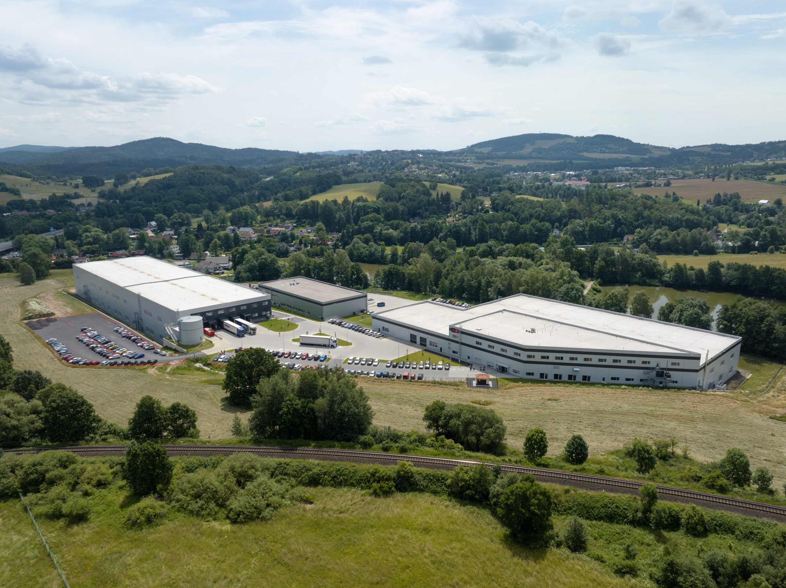
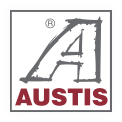
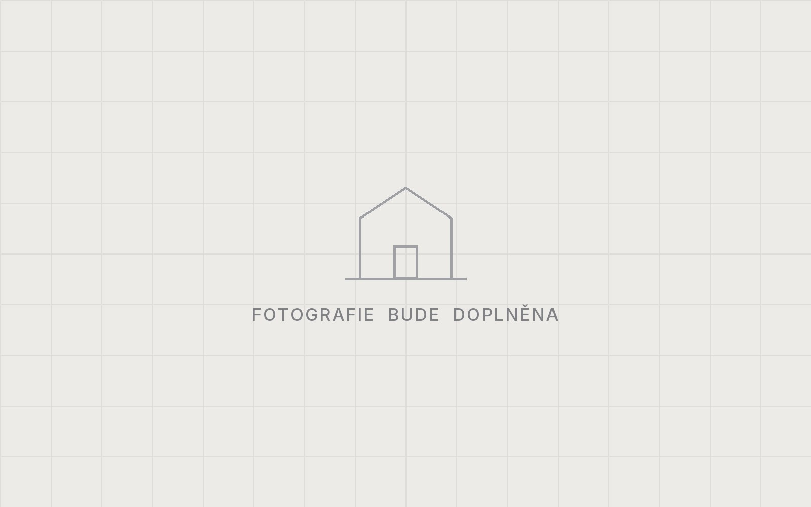

První jednání
Probereme váš stavební záměr, lokalitu, dostupné podklady a požadovaný termín. Upřesníme rozsah spolupráce a další kroky přípravy nabídky.


poptat spolupráciGenerální dodávky novostaveb a rekonstrukcí
Realizujeme rezidenční, komerční a provozní objekty pro developery, investory a provozovatele budov. Zaměřujeme se na generální dodávky novostaveb a rekonstrukcí většího rozsahu. Naše zkušenosti představují dokončené i právě probíhající realizace.
Probereme váš stavební záměr, lokalitu, dostupné podklady a požadovaný termín. Upřesníme rozsah spolupráce a další kroky přípravy nabídky.
Podle zadání připravíme postup prací, harmonogram a rozpočet. Vyjasníme také činnosti, které zajistíme my, a součinnost potřebnou od investora.
Zajistíme kompletní realizaci stavby. O postupu, nákladech a otázkách, které vyžadují vaše rozhodnutí, vás pravidelně informujeme dohodnutou formou.
Předáme dokončené dílo. Rozsah součinnosti při kolaudaci a navazujících činnostech vychází ze smluvního zadání.

Novostavby bytových, komerčních, administrativních a polyfunkčních objektů.
Modernizujeme a přestavujeme stávající budovy a areály. Postup navrhujeme podle technického stavu objektu, vašich priorit a rozpočtu. U využívaných budov posoudíme možnosti etapizace a prací za provozu.
Nástavba, přístavba a celkové stavební úpravy původního rekreačního objektu.
Více o realizaciJsme součástí skupiny AUSTIS a.s. Zaměřujeme se na generální dodávky průmyslové, občanské a bytové výstavby pro soukromé investory i veřejný sektor. Naše zaměření a zkušenosti představujeme prostřednictvím konkrétních služeb a realizací.
Rozšiřujeme tým. Hledáme kolegy pro vedení staveb a výrobní přípravu. Zajímá vás práce na stavebních projektech? Podívejte se na aktuální pozice a napište nám.
Volné poziceGenerální dodávky novostaveb a rekonstrukcí
Realizujeme rezidenční, komerční a provozní objekty pro developery, investory a provozovatele budov. Zaměřujeme se na generální dodávky novostaveb a rekonstrukcí většího rozsahu. Naše zkušenosti představují dokončené i právě probíhající realizace.
Probereme váš stavební záměr, lokalitu, dostupné podklady a požadovaný termín. Upřesníme rozsah spolupráce a další kroky přípravy nabídky.
Podle zadání připravíme postup prací, harmonogram a rozpočet. Vyjasníme také činnosti, které zajistíme my, a součinnost potřebnou od investora.
Zajistíme kompletní realizaci stavby. O postupu, nákladech a otázkách, které vyžadují vaše rozhodnutí, vás pravidelně informujeme dohodnutou formou.
Předáme dokončené dílo. Rozsah součinnosti při kolaudaci a navazujících činnostech vychází ze smluvního zadání.
Novostavby bytových, komerčních, administrativních a polyfunkčních objektů.
Modernizujeme a přestavujeme stávající budovy a areály. Postup navrhujeme podle technického stavu objektu, vašich priorit a rozpočtu. U využívaných budov posoudíme možnosti etapizace a prací za provozu.
Nástavba, přístavba a celkové stavební úpravy původního rekreačního objektu.
Více o realizaciJsme součástí skupiny AUSTIS a.s. Zaměřujeme se na generální dodávky průmyslové, občanské a bytové výstavby pro soukromé investory i veřejný sektor. Naše zaměření a zkušenosti představujeme prostřednictvím konkrétních služeb a realizací.
Rozšiřujeme tým. Hledáme kolegy pro vedení staveb a výrobní přípravu. Zajímá vás práce na stavebních projektech? Podívejte se na aktuální pozice a napište nám.
Volné pozice AUSTIS Pozemní stavby s.r.o
AUSTIS Pozemní stavby s.r.o